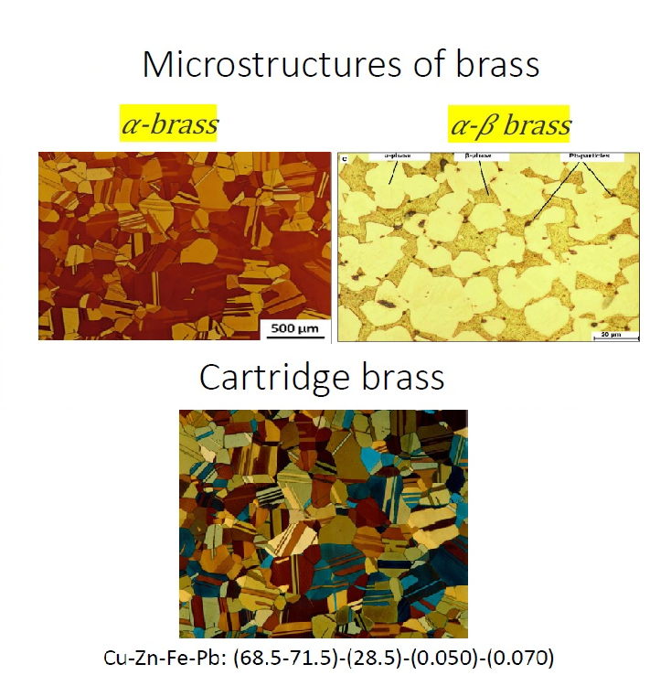
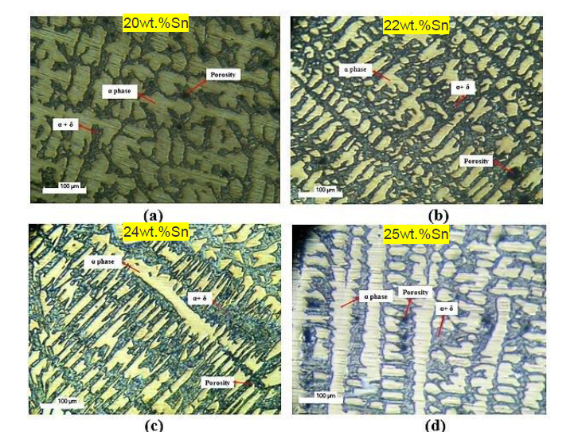
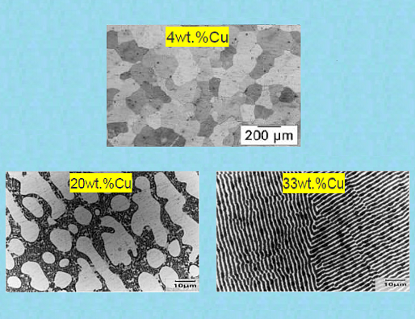
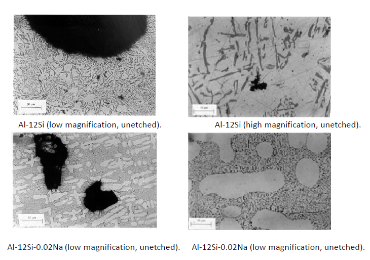

Theory :
The basic metallographic quality control process for Non - ferrous alloys is as follows:
1.Number of phases present in the Microstructure.
2.The Morphology, size and distribution of the Second phase present in the Microstructure
Types of Non - Ferrous Alloys
1.Cu - Zn alloy (Brass) :
The Cu-Zn alloy is also called as "BRASS".
Different Brasses are available like Cartridge Brass with 68.5-71.5% Copper and 28.5% Zinc.

2.Cu - Sn alloy (Bronze) :
The Cu-Sn alloy is also called as "BRONZE".

3.Al - Cu alloy :
The Al-Cu alloy has 5.65 wt% solubility of Cu in Al at 548C.
The solubility drops down to 0.02 wt% at Room temperature.
The Precipitation hardening is Possible for Al-Cu alloy.

4.Al - Si alloy :
The Al-12Si wt% alloys are common in this group of alloys.
